SEMESTER 1
This is a revised version of the work that I submitted for the first semester of the Introduction to Games Design module.
ESCAPE GOAT LEVEL DESIGN
Skills: Level Design | Engine: Escape Goat Editor
Before I started to come up with a concept for my level, I played through the game demo to grasp how the game played, and how the different mechanics could potentially interact with each other. Once I had done that, I moved on to creating a basic pixel map for the level.
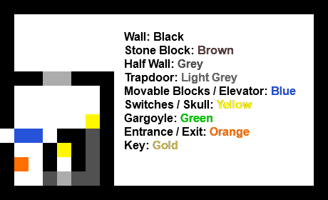The first section I mapped out was the first portion of the level. For this section, the player needs to use the mouse to press the switches and escape to the rest of the level. The trapdoors are open as of the start of the level, but to get out to the upper section they close, needing the player to think about how to use the mouse to reopen them again.
 For the main part of the level, I decided to experiment with the different objects and their interactions to see what ideas would work well and be fun for the player. Originally, I planned on using a grid-based room pattern where the player would traverse through small rooms, but changed it due to each room being small and cramped, and feeling the need to experiment with a larger areas to make more interesting puzzles.
For the main part of the level, I decided to experiment with the different objects and their interactions to see what ideas would work well and be fun for the player. Originally, I planned on using a grid-based room pattern where the player would traverse through small rooms, but changed it due to each room being small and cramped, and feeling the need to experiment with a larger areas to make more interesting puzzles.
 After playing around with different ideas, I came up with the idea of using the gargoyles and skulls to trap the player after they enter the lower section for the key, and then have them solve the puzzle to figure out a way to escape the room again.
After playing around with different ideas, I came up with the idea of using the gargoyles and skulls to trap the player after they enter the lower section for the key, and then have them solve the puzzle to figure out a way to escape the room again.
 After testing the level myself and having other people play through the level, I decided that the lower puzzle needed to be more complex and have more obstacles to challenge the player. I added a trap for the mouse after the player presses a switch, which then moves blocks around the exit the area making the way to the end much more challenging.
By using a spring switch, the mouse stays stuck in the single area, which then causes the blocks to move back and forth every time it loops around the block.
After testing the level myself and having other people play through the level, I decided that the lower puzzle needed to be more complex and have more obstacles to challenge the player. I added a trap for the mouse after the player presses a switch, which then moves blocks around the exit the area making the way to the end much more challenging.
By using a spring switch, the mouse stays stuck in the single area, which then causes the blocks to move back and forth every time it loops around the block.
 Once I had developed the idea, I liked what I had come up with and decided to use it for the final level. However, after conducting more playtesting I found an issue with the mouse trap I had made. The player could just call the mouse back and the moving blocks would stop, ruining the difficulty of the final part of the level. To solve this problem, I had to rearrange the bottom of the level, instead having a switch that sets off an elevator that constantly moves to hit two switches controlling the trap.
After I had solved this issue, I added some decorative elements to the level and uploaded the final design.
Once I had developed the idea, I liked what I had come up with and decided to use it for the final level. However, after conducting more playtesting I found an issue with the mouse trap I had made. The player could just call the mouse back and the moving blocks would stop, ruining the difficulty of the final part of the level. To solve this problem, I had to rearrange the bottom of the level, instead having a switch that sets off an elevator that constantly moves to hit two switches controlling the trap.
After I had solved this issue, I added some decorative elements to the level and uploaded the final design.
Level Playthrough Video
The final level, Escape Mouse v3, is available to play online here.
ESCAPE GOAT LEVEL ANALYSIS
Skills: Level Analysis, Map Design
The level I chose to analyse from Escape Goat was Frozen Cavern Level 1.
Interactable Objects
Switches that start pressed are marked in red to differentiate them from the other switches. The different switches control the movable tiles in the level.
Tile Movement Paths
Level Walkthrough

VVVVVV LEVEL ANALYSIS
For the other level I decided to analyse, I decided to use VVVVVV. It is a platformer which has the gimmick of having the player being able to flip gravity when on the ground, and structures the game around a fixed, single-screen style camera. For the analysis of The Laboratory level, I took screenshots of the different screens that make up the level. The goal is to meet up with your crewmate and then use the teleporter at the end of the level.
The white lines in the levels bounce the player back, flipping gravity for them. The C markers are checkpoints, and are normally spread out once per screen. The enemies on this screen move from left to right and bounce back on the edges of the screen / interact with objects, and spikes are attached to walls and other objects in the level. The player needs to avoid them to get through or be sent back to their last checkpoint.
Level Walkthrough
VOXEL ZONE MAPS
Skills: Level Analysis, Map Design
After playing Voxel Zone's level, I recreated the entire level in a pixel map in Phootshop, then used that as a reference to import into MagicaVoxel. This simplified the process of creating the level in 3D.
Due to the nature of the level, I knew I would have to split the model up into the 3 different rooms.
Once I had it imported into the program, I built up the full level in MagicaVoxel, to show how each part of the level connects together. However, the walkthrough split them up into the original rooms like I had planned.
Full Level Renders
Level Walkthrough

Collectables
In the level, there are 30 collectibles for the player to collect.
Block Movement
The blue blocks in the level move when the switches are collected, allowing for the player to progress through the level. To highlight where they move, I numbered each separate block / set of blocks that move with each switch, as well as putting arrows to point the direction that they move. Room 3 doesn't have any moving blocks.
SKYRIM LEVEL BLOCKOUT
Skills: Level Blockouts
The Skyrim town I chose to block out was Morthal. Because it was my first time using 3DS Max as well as my first time trying to properly make something in a 3D modelling software, the many different elements of the town would prove a good way for me to learn the different skills and learn to use 3DS Max. The blockout was made using a 2D map as a reference, I also made an annotated map of each building.

PERIL CRAB LEVEL BUBBLE MAPS
Skills: Level Analysis, Level Design
I first made a pixel map and voxel model for the crab level, which were then used as a basis for creating the bubble maps.
Pixel and Voxel Maps
First, I created a very simple bubble map, and then expanded on that to create two more iterations, getting more detailed with each pass.
Bubble Map - First Iteration
Bubble Map - Second Iteration
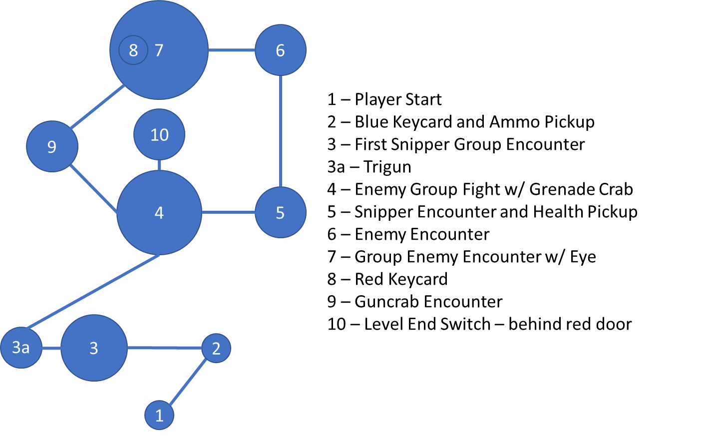Bubble Map - Final Iteration
Finally, I annotated the pixel and voxel map to show where each point is in the level.
SPLATOON 2 MISSION 3 BUBBLE MAPS
The level I chose to create bubble maps for from Splatoon 2's Hero Mode is Mission 3: Sunset Octocopter - Dash and Jump. A gameplay video is available here.
Bubble Map - First Iteration
Bubble Map - Second Iteration
Bubble Map - Final Iteration
SUPER MARIO GALAXY BUBBLE MAPS
The other game I chose to create a bubble map for is Super Mario Galaxy, and I mapped out hte first level/mission: Good Egg Galaxy's Dino Piranha. The gameplay video is available here.
Bubble Map - First Iteration
Bubble Map - Second Iteration
Bubble Map - Final Iteration
For these bubble maps, I also annotated maps of the level, created using noclip.website.

PERIL BEAT DOWN LEVEL BEATS & PACING
Skills: Level Analysis, Level Design
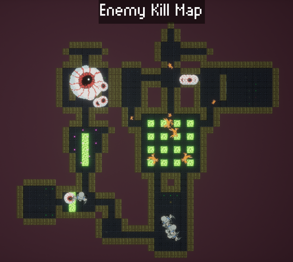
Once I had played through the Peril level, I took a screenshot of the enemy kill map that displays at the end of the level, and then used that as a base to create a pixel map in Photoshop.
At first, I made a small pixel map of the level to get an idea of the basic layout of the level itself without any of the features put onto the map; I then adapted it into making a more detailed set of maps, highlighting all the different features of the level.
Base Pixel Map, Weapon Map and Enemy Map
The central room in the level has to be passed through multiple times, with each pass having multiple sets of enemies spawning depending on what key the player had just picked up. Thus, I created separate versions with each of the additional enemy spawns, for the red and blue keys respectively.
Now the level was fully mapped out, I moved on to creating a set of bubble maps that followed the level's critical path.
Bubble Map - First Iteration
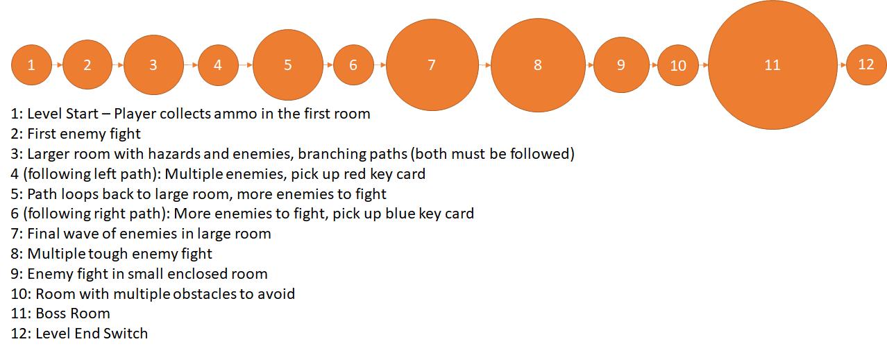Bubble Map - Second Iteration
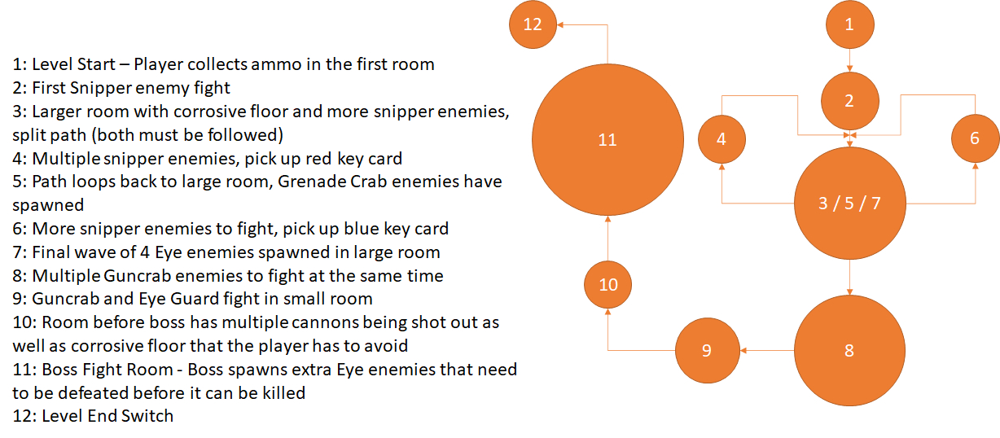Bubble Map - Final Iteration
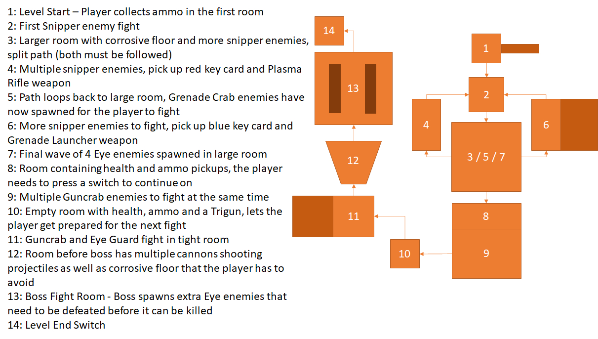Beats & Pacing Analysis
Finally, I used the bubble maps as a basis for the beats and pacing diagram for the Beat Down level.
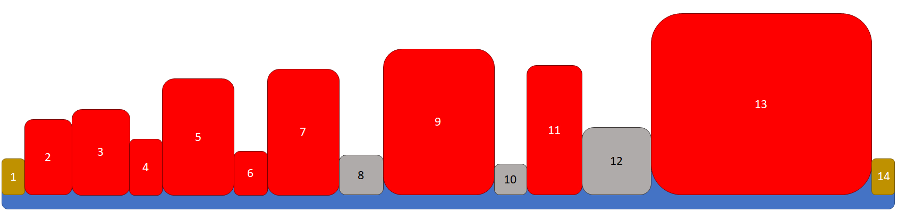To finish, I then made a curve from this diagram, showing how the intensity varied as the level went on. At first, I simply used straight lines to plot the curve, but then created another final version using the Curvature Pen tool to make it look more natural and fluid.
Beats & Pacing Diagrams
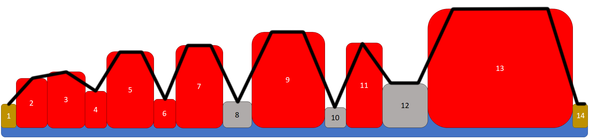 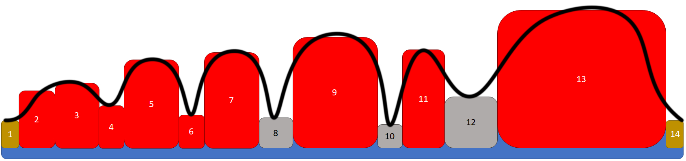Level Pacing Curve
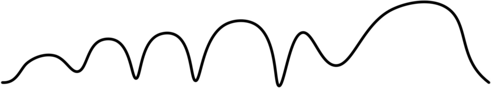By plotting the curve, it shows how the level has a natural sense of progression and intensity / difficulty scaling as the player goes through it, with the troughs in the line giving the player a needed break from a constantly intense level. The intensity progression also somewhat follows Freytag's Pyramid, with the action of the level rising as the player goes through it, until it reaches its climax and then falls down again, although the falling action in the case of this level is very short in comparison to the build-up to the climax.
SUPER MARIO 64 (DS) - BOB-OMB BATTLEFIELD BEATS & PACING
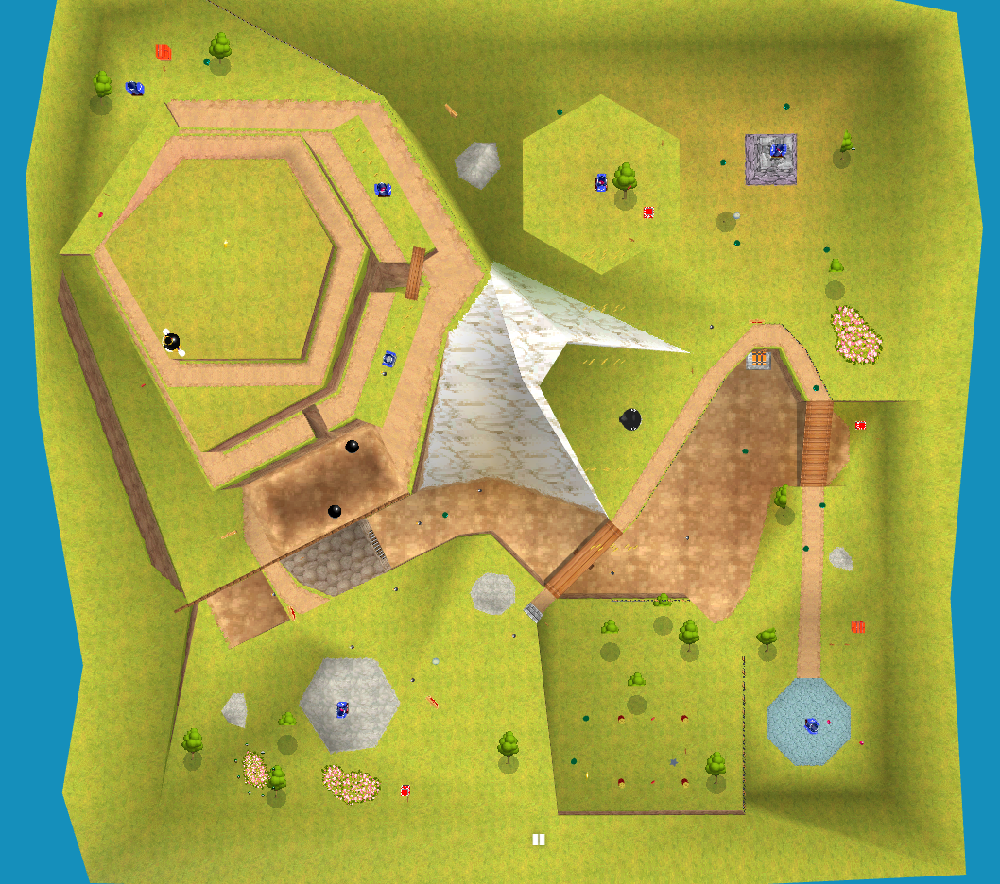
The level I decided to make a beats and pacing map for was Bob-omb Battlefield from Super Mario 64 (DS). Because the objective and slight variations in the level layout change depending on what star you choose on the star select screen, I decided on creating a beats and pacing map for the first star, Big Bob-omb on the Summit.
I got a top-down screenshot of the map to use as a basis from the online level viewer noclip.website.
Because it had been a while since I had last played the game, I found a gameplay video of it on YouTube and worked from that. Now that I had been refreshed, I could much more easily create a set of bubble maps for the level's critical path.
Bubble Map - First Iteration
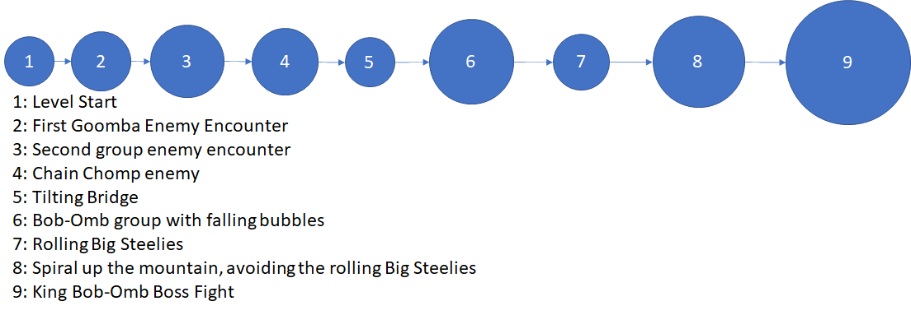Bubble Map - Second Iteration
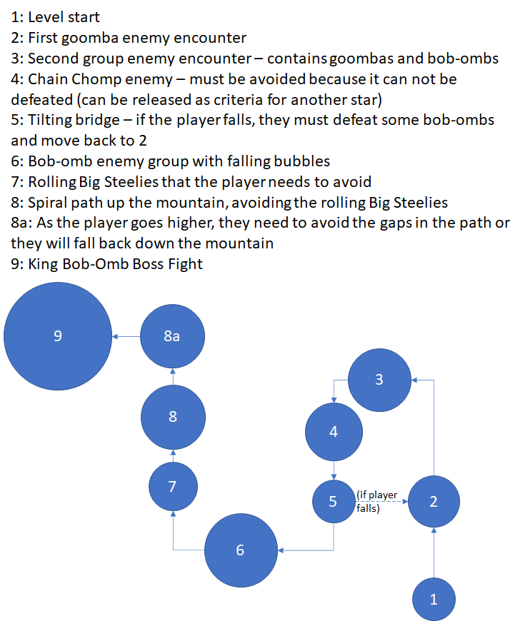Bubble Map - Final Iteration
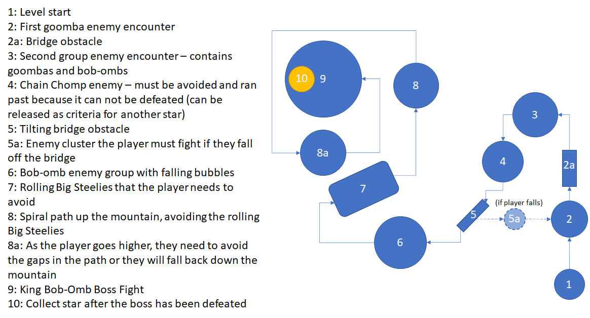Beats & Pacing Analysis
When creating the beats and pacing diagrams, I decided to exclude bubble 5a to keep the diagram cleaner and more accurately reflect the critical path, as well as to have the diagrams follow a single chronological path through the level.
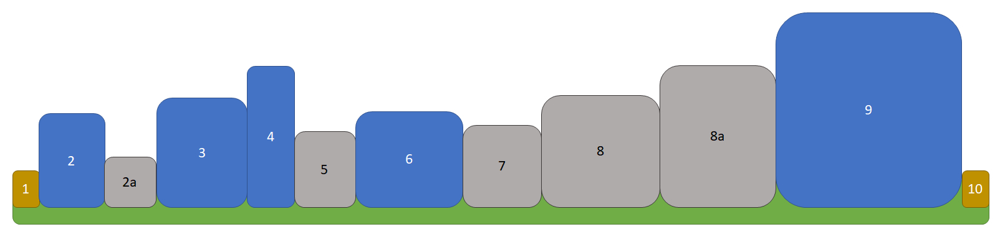Much like with the Peril map, when it came to creating a pacing curve showing the intensity of the level over time, I created a version with straight lines first, then another iteration using curved lines.
Beats & Pacing Diagrams
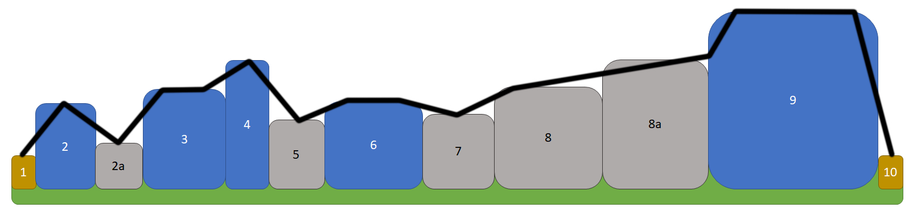 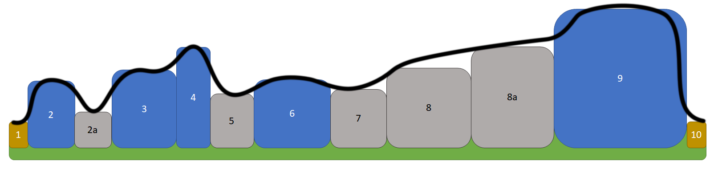Level Pacing Curve
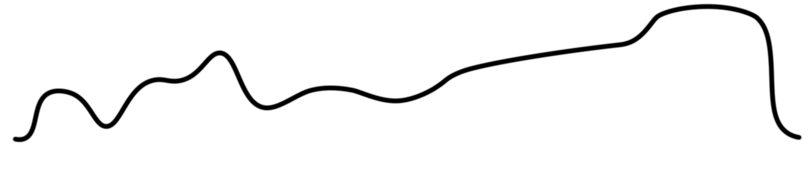The level itself has its intensity rise and fall, creating two distinct intensity peaks, the entire level also has its' intensity build towards the boss fight at the end of the level. Because this is the first level in the game, it makes sense to not have much variation in intensity, as it gives new players a chance to adjust to the controls and get used to the gameplay. While it seems like there is a fair amount of intensity from my diagram, it was made relative to everything else in the level, so even then the level never gets very intense on the player at any point.
Based on the diagram, it doesn't really fit into the traditional 3 act structure nor does it follow Freytag's pyramid. However, putting the level into the context of it being the first place the player goes in the game, you could interpret the level as being part of a larger 3 act structure.
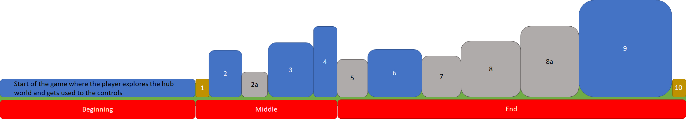The game also breaks down access to stages into 3 distinct areas in the hub castle, with new ones being unlocked as the player gets more stars and progresses through the game. Thus, you could instead have this level be the start of the beginning / 1st act, and have the 3 act structure extend throughout the whole game.